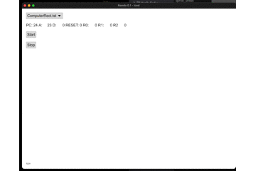

<!DOCTYPE html>
<html lang="ja">

<head>
    <meta charset="UTF-8">
    <meta http-equiv="X-UA-Compatible" content="IE=edge">
    <meta name="viewport" content="width=device-width, initial-scale=1.0">
    <title>0436 first website</title>

    
<!-- UIkit CSS -->
<link rel="stylesheet" href="https://cdnjs.cloudflare.com/ajax/libs/uikit/3.0.3/css/uikit.min.css" />

<!-- UIkit JS -->
<script src="https://cdnjs.cloudflare.com/ajax/libs/uikit/3.0.3/js/uikit.min.js"></script>
<script src="https://cdnjs.cloudflare.com/ajax/libs/uikit/3.0.3/js/uikit-icons.min.js"></script>

<!-- fontawesome -->
<link rel="stylesheet" href="https://use.fontawesome.com/releases/v5.1.0/css/all.css"
    integrity="sha384-lKuwvrZot6UHsBSfcMvOkWwlCMgc0TaWr+30HWe3a4ltaBwTZhyTEggF5tJv8tbt" crossorigin="anonymous">

<!-- three.js -->
<script src="https://cdnjs.cloudflare.com/ajax/libs/three.js/r121/three.min.js"></script>
<!-- vanta -->
<script src="https://cdn.jsdelivr.net/npm/vanta@latest/dist/vanta.net.min.js"></script>


<link rel="stylesheet" href="https://sayamapp.github.io/mystyles.css">


<link rel="icon" href=https:&#x2F;&#x2F;sayamapp.github.io&#x2F;img&#x2F;favicon2.png type="image/x-icon">

</head>

<body>
    <div id="vanta-net" class="vantajs"></div>
    <script>
        VANTA.NET({
            el: "#vanta-net",
            mouseControls: true,
            touchControls: true,
            gyroControls: false,
            minHeight: 200.00,
            minWidth: 200.00,
            scale: 1.00,
            scaleMobile: 1.00,
            color: 0x3fffff,
            backgroundColor: 0x000000,
        })
    </script>

    
    <!-- Main Navbar -->
    <header class="sa-header">
        <nav class="uk-navbar">
            <div class="uk-navbar-left">
                <ul class="uk-navbar-nav">
                    <li class="uk-active">
                        <div class="sa-title">
                            <a href="../" class="sa-title">0436のdairymemo</a>
                            <div class="sa-subtitle">My first website with Zola and UIKit</div>
                        </div>
                    </li>
                </ul>
            </div>
            <div class="uk-navbar-right">
                <ul class="uk-navbar-nav uk-visible@s">
                    <li><a class="uk-text-large" href="../">index</a></li>
                    <li><a class="uk-text-large" href="./202004">blog</a></li>
                </ul>
                <a href="#" class="uk-navbar-toggle uk-hidden@s" uk-navbar-toggle-icon uk-toggle="target: #sidenav"></a>
            </div>
        </nav>
    </header>

    <div id="sidenav" uk-offcanvas="flip: true" class="uk-offcanvas">
        <div class="uk-offcanvas-bar">
            <ul class="uk-nav">
                <li><a class="uk-text-large" href="../">index</a></li>
                <li><a class="uk-text-large" href="./202005">blog</a></li>
            </ul>
        </div>
    </div>
     

    
    <article class="sa-article">
        <ul>
            <li>202004</li>
            <li>202003</li>
        </ul>
        
        <div class="sa-card">
            <div class="sa-article-header">
                <div class="sa-author-icon">
                    
                </div>
                <div class="sa-article-data">
                    <p class="sa-article-date">2021-07-30</p>
                    <p class="sa-article-title">DairyMemo</p>
                </div>
            </div>
            <div class="sa-article-content">
                <h1 id="20210730">20210730</h1>
<p>オリンピック開会式からもう1週間経っちゃった。色々答え合わせ等出てきて、ある程度予想通りという感じ。<br />
なんかちょっと安心した。もう関わんなかったもん勝ちみたいになっちゃってるからこれで良かったのかも知らん。
ひとまず炎上覚悟で異を唱えたゲムスパとアトロク出てたジニさん？には大分救われた。
ファミ通1強でゲーム批評は失敗、continueは逃げ出した頃に比べたら全然健全だよ。</p>
<p>コロナに関して。私は外食もせず、極力人と会わず、イベントも行かず、手洗いうがいの励行しかできないので
ひとまずそういう、静かーな生活を続けているのだけれども状況は今日現在悪化の一途を辿っている模様。
勉強不足だしイメージで書いちゃう訳だけれど、この状況下で世界中から人を集め、抑制にほぼ失敗したということは、
変異種の発生確率maxって認識で合っているのでしょうか？だとしたら
潜伏期間を計算に入れると来週あたりに何かしら大きなイベントが発生する可能性が高いという事なのだろうか？
やれ中止だ大丈夫だガーガー言ってても、もう既に手遅れなのだとしたらなんか悲しいですね。</p>
<p>私が予想をそれっぽく書くと大概はずれるので今回もそうあって欲しい。</p>

            </div>
        </div>
        
        <div class="sa-card">
            <div class="sa-article-header">
                <div class="sa-author-icon">
                    
                </div>
                <div class="sa-article-data">
                    <p class="sa-article-date">2021-07-24</p>
                    <p class="sa-article-title">DairyMemo</p>
                </div>
            </div>
            <div class="sa-article-content">
                <h1 id="20210724">20210724</h1>
<p>オリンピック。開会式とか全然観る気無くて、いつも通り仕事してラジオ聞いてたんですが、
やっぱり全コンテンツが結局五輪の話題に触れざるを得ない状況ですからついこっちも気になってしまい、
開会式終了後に関連する動画を漁り（テレビ無いので）一通りの情報をダラダラ眺めたり考えたりしてたら
すっかり眠れなくなってしまったので約1ヶ月ぶりの更新とあいなる。</p>
<p>以下個人的な感想。<br />
その、なんやらごちゃごちゃとしたバックグラウンドやましてコロナについても解決にはまだ時間がかかるので
やれ成功がどうしたとかそこら辺についてはまだ考察に時間がかかるとしますが、にしても。</p>
<p>2020年にオリンピックを開催するなら大友克洋を納得させないといけないと思う。<br />
ゲームを使うなら宮本茂を納得させなくてはいけないと思う。<br />
マンガ、アニメを使うなら鳥山明を納得させないといけないと思う。<br />
これは最低限の礼儀だと私は強く思いました。</p>
<p>つかここさえクリアすれば東京オリンピックの評価なんてガバもいいとこだと思うんだけども私の認識がおかしいのかと思ってたら
なんか最初のプランの画像がモロだったので分かってんなーmikiko先生と椎名林檎。山崎貴は分かってなさそうだけどなんかもうヨシ！</p>
<p>いやーなんかもう本当に悲しくなってしまって珍しく眠気が吹き飛んでしまったので未練がましくリオの閉会式とか観たりしてさぁ、
アレについては当時は震え上がってウンコ漏らしたし、今見てもやっぱり超最高でさぁ。
今思えば任天堂があんな太っ腹にコンテンツ貸すなんてのがまずミラクル。さらに
総理がマリオの格好するなんて任天堂の一線は完全に超えてて、それは調べたらかなりアレな力が働いた感じでしたけども、
それでも通ったつうのは相当最初の演出チームというのは信頼されていたのだなぁと。
想像を絶する何かもう身の毛もよだつレベルの何かがもうあったに違いない。すげぇことだよ。イカれとる。
そして実現できなかった悲しみはもうね、もう何だろうねぇ。</p>
<p>と、いうことで5年越しにリオ閉会式のパフォーマンスの価値を再確認できました。携わった形全員に心から感謝したい。
ありがとうございます。</p>
<p>あとミライトワちゃん全然でねぇのアレ何？こっちは日本恒久オリンピックキャラクターだと思ってんすけど。
国民舐めてんの？</p>

            </div>
        </div>
        
        <div class="sa-card">
            <div class="sa-article-header">
                <div class="sa-author-icon">
                    
                </div>
                <div class="sa-article-data">
                    <p class="sa-article-date">2021-07-01</p>
                    <p class="sa-article-title">DairyMemo</p>
                </div>
            </div>
            <div class="sa-article-content">
                <h1 id="20210701">20210701</h1>
<p>ひょっとしてpopメロンソーダは消滅してしまったの？<br />
毎年夏季限定で出てきてたんですけど、今年はまだ1箇所しか見つかっていません。</p>

            </div>
        </div>
        
        <div class="sa-card">
            <div class="sa-article-header">
                <div class="sa-author-icon">
                    
                </div>
                <div class="sa-article-data">
                    <p class="sa-article-date">2021-06-26</p>
                    <p class="sa-article-title">DairyMemo</p>
                </div>
            </div>
            <div class="sa-article-content">
                <h1 id="20200626">20200626</h1>
<p>今日のatcoderは2問しか解けずビックリです。いやマジで全然分かんなかった。<br />
ここ数回現状維持でコツコツ積み上げたレートがおそらくガクンと下がると思われますがまぁ気にしない方針。</p>
<p>最近また1からアルゴリズムの勉強を復習していますので、また半年くらいかけて戻せばいいと思う。
目標は水色なので、ま、なんとかなるだろう。</p>
<p>前回の更新の時から始めたhabiticaはいい感じに続いています。<br />
個人的には風呂、歯磨きくらいのレベルでトイレ掃除を入れたのが実に冴えている。<br />
ほら、出世する人はトイレ掃除を欠かさないとか言うじゃないですか。<br />
自分が大人物になった錯覚のまま、日々のタスクもこなしている感じ。</p>
<p>唯一習慣化できそうに無いのがここの更新。これが実にめんどくさい。<br />
原因はハッキリしていて、つまりめんどくさい。
めんどくさい。<br />
自動化が足りていない。</p>
<ul>
<li>毎日エディタを開く</li>
<li>テンプレートを複製</li>
<li>内容を書く</li>
<li>git commit + push</li>
</ul>
<p>内容を書くところ以外は全部自動でやってくんないとダメだなぁと。
なんなら内容だって最近は日々Uberで自転車漕いでるだけなので、勝手に書いてくれて良いはず。
再度システムから作り直す、はず。多分。やるんじゃないかなー。</p>
<p>はい。今日もめんどくさかった。</p>

            </div>
        </div>
        
        <div class="sa-card">
            <div class="sa-article-header">
                <div class="sa-author-icon">
                    
                </div>
                <div class="sa-article-data">
                    <p class="sa-article-date">2021-06-22</p>
                    <p class="sa-article-title">DairyMemo</p>
                </div>
            </div>
            <div class="sa-article-content">
                <h1 id="20200622">20200622</h1>
<p>来月から生活が修羅に入ると思われるため、ある程度生活環境を整理するなど。<br />
色々忘れると厄介な事柄を整理したいと思うんだけどgooglecalendarもtrelloも何もかも、<br />
三日坊主以上の成果をあげた事が無いので困ってしまう。</p>
<p>とりあえず今回は以前に登録していたhabiticaを引っ張り出してToDoを埋めてみる。</p>
<p>Unityを再インストールしてみたものの、C#を書く気にならなんだため、
代わりにgodotを入れて遊んでみたりする。<br />
C#は好きだけどUnity、5年くらい頑張って全然ものにできていない。</p>

            </div>
        </div>
        
        <div class="sa-card">
            <div class="sa-article-header">
                <div class="sa-author-icon">
                    
                </div>
                <div class="sa-article-data">
                    <p class="sa-article-date">2021-06-21</p>
                    <p class="sa-article-title">DairyMemo</p>
                </div>
            </div>
            <div class="sa-article-content">
                <h1 id="20200621">20200621</h1>
<p>米を買う。</p>

            </div>
        </div>
        
        <div class="sa-card">
            <div class="sa-article-header">
                <div class="sa-author-icon">
                    
                </div>
                <div class="sa-article-data">
                    <p class="sa-article-date">2021-06-20</p>
                    <p class="sa-article-title">DairyMemo</p>
                </div>
            </div>
            <div class="sa-article-content">
                <h1 id="bonyaritosctokashu-itari">ぼんやりとscとか書いたり</h1>
<p>明日からがんばります。</p>
<h2 id="memo">memo</h2>
<ul>
<li>OSCメッセージの送り方</li>
<li>808Kickを作る</li>
</ul>
<h2 id="note">note</h2>
<pre style="background-color:#2b303b;color:#c0c5ce;"><code><span>OSCDef(\name, { |msg|
</span><span>    s.sendMsg(&quot;/s_new&quot;, &quot;synth_name&quot;, s.nextNodeID, 0, 1, &quot;arg&quot;, arg_value);
</span><span>}, \p);
</span></code></pre>
<pre style="background-color:#2b303b;color:#c0c5ce;"><code><span>OSCdef.new(key, func, path, srcID, recvPort, argTemplate, dispatcher)
</span><span>
</span><span>// 新規に楽器を生成 (&quot;/s_new&quot;, &quot;楽器名&quot;, SynthID, action, targetID)
</span><span>s.sendMsg(&quot;/s_new&quot;, &quot;synth_name&quot;, s.nextNodeID, 0, 1);
</span><span>
</span><span>// 楽器を終了
</span><span>s.sendMsg(&quot;/n_free&quot;, n);
</span><span>
</span><span>
</span><span>// example
</span><span>// 新規に楽器(sine)を生成
</span><span>s.sendMsg(&quot;/s_new&quot;, &quot;sine&quot;, n = s.nextNodeID, 0, 1);
</span><span>// 周波数を変更
</span><span>s.sendMsg(&quot;/n_set&quot;, n, &quot;freq&quot;, 440);
</span><span>// 楽器を終了
</span><span>s.sendMsg(&quot;/n_free&quot;, n);
</span></code></pre>
<h1 id="808-kick">808 kick</h1>
<pre style="background-color:#2b303b;color:#c0c5ce;"><code><span>(
</span><span>SynthDef(&quot;super808&quot;, {
</span><span>    arg out, speed=1, sustain=1, pan, voice=0, n;
</span><span>    var env, sound, freq;
</span><span>    n = (n &gt; 0) * n + (n &lt; 1) * 3);
</span><span>    freq 1 + 3 * n;
</span><span>    env = EnvGen.ar(Env.linen(0.01, 0, 1, 1, 3), timeScale: sustain, doneAction: 2);
</span><span>    sound = LPF.ar(SinOscFB.ar(XLine.ar(100 * freq, freq, 0.025 / speed), voice), 9000);
</span><span>    OffsetOut.ar(out, Pan2.ar(sound, pan))
</span><span>}).add;
</span><span>
</span><span>OSCdef(\osc_name, {|msg|
</span><span>    s.sendMsg(&quot;/s_new&quot;, &quot;super808&quot;, s.nextNodeID, 0, 1, &quot;n&quot;, msg[1]);
</span><span>}, \p);
</span><span>)
</span></code></pre>
<h2 id="think">think</h2>
<p>楽器はトリガーさせる毎に消えちゃうもんなの？doneActionとかあるのはそういうこと？</p>

            </div>
        </div>
        
        <div class="sa-card">
            <div class="sa-article-header">
                <div class="sa-author-icon">
                    
                </div>
                <div class="sa-article-data">
                    <p class="sa-article-date">2021-06-06</p>
                    <p class="sa-article-title">DairyMemo</p>
                </div>
            </div>
            <div class="sa-article-content">
                <h1 id="markdownji-fa">markdown記法</h1>
<p>の練習とどう見えるかのチェック。</p>
<h2 id="jian-chu-si">見出し</h2>
<pre style="background-color:#2b303b;color:#c0c5ce;"><code><span># 見出し1
</span><span>## 見出し2
</span><span>### 見出し3
</span><span>#### 見出し4
</span><span>##### 見出し5
</span><span>###### 見出し6
</span></code></pre>
<h1 id="jian-chu-si1">見出し1</h1>
<h2 id="jian-chu-si2">見出し2</h2>
<h3 id="jian-chu-si3">見出し3</h3>
<h4 id="jian-chu-si4">見出し4</h4>
<h5 id="jian-chu-si5">見出し5</h5>
<h6 id="jian-chu-si6">見出し6</h6>
<h2 id="br">br</h2>
<p>スペース2つ+改行
ああああ(スペース)(スペース)<br />
いいいい</p>
<h2 id="risuto">リスト</h2>
<pre style="background-color:#2b303b;color:#c0c5ce;"><code><span>- リスト
</span><span>- リスト
</span><span>    - リスト
</span><span>    - リスト
</span><span>        - リスト
</span><span>    - リスト
</span><span>
</span><span>+ リスト
</span><span>    + リスト
</span><span>        * リスト
</span></code></pre>
<ul>
<li>リスト</li>
<li>リスト
<ul>
<li>リスト</li>
<li>リスト
<ul>
<li>リスト</li>
</ul>
</li>
<li>リスト</li>
</ul>
</li>
</ul>
<ul>
<li>リスト
<ul>
<li>リスト
<ul>
<li>リスト</li>
</ul>
</li>
</ul>
</li>
</ul>
<h2 id="risuto-fan-hao-fu-ki">リスト(番号付き)</h2>
<pre style="background-color:#2b303b;color:#c0c5ce;"><code><span>1. リスト
</span><span>    1. リスト
</span><span>    1. リスト
</span><span>        1. リスト
</span><span>1. リスト
</span></code></pre>
<ol>
<li>リスト
<ol>
<li>リスト</li>
<li>リスト
<ol>
<li>リスト</li>
</ol>
</li>
</ol>
</li>
<li>リスト</li>
</ol>
<h2 id="yin-yong">引用</h2>
<pre style="background-color:#2b303b;color:#c0c5ce;"><code><span>&gt; 引用1
</span><span>&gt;&gt; 引用2
</span></code></pre>
<blockquote>
<p>引用1</p>
<blockquote>
<p>引用2</p>
</blockquote>
</blockquote>
<h2 id="kodoburotuku">コードブロック</h2>
<pre style="background-color:#2b303b;color:#c0c5ce;"><code><span>    // タブでインデントする
</span><span>    code
</span><span>        code
</span><span>        (code)
</span><span>    code
</span></code></pre>
<pre style="background-color:#2b303b;color:#c0c5ce;"><code><span>code
</span><span>    code
</span><span>    (code)
</span><span>code
</span><span>// へー。べんり。
</span></code></pre>
<h2 id="inrainkodo">インラインコード</h2>
<pre style="background-color:#2b303b;color:#c0c5ce;"><code><span>`code(code)`
</span></code></pre>
<p><code>code(code)</code></p>
<h2 id="em-strong-em-strong">em , strong , em + strong</h2>
<pre style="background-color:#2b303b;color:#c0c5ce;"><code><span>*string*
</span><span>_string_
</span><span>**string**
</span><span>__string__
</span><span>***string***
</span><span>___string___
</span></code></pre>
<p><em>string</em>
<em>string</em>
<strong>string</strong>
<strong>string</strong>
<em><strong>string</strong></em>
<em><strong>string</strong></em></p>
<h2 id="shui-ping-xian">水平線</h2>
<pre style="background-color:#2b303b;color:#c0c5ce;"><code><span>***
</span></code></pre>
<hr />
<h2 id="rinku">リンク</h2>
<pre style="background-color:#2b303b;color:#c0c5ce;"><code><span>[link](http://aaa.bbb)
</span></code></pre>
<p><a href="http://aaa.bbb">link</a></p>
<h2 id="hua-xiang">画像</h2>
<pre style="background-color:#2b303b;color:#c0c5ce;"><code><span>
</span></code></pre>
<p></p>
<p>今日のatcoderは4問解けました。やったー！</p>

            </div>
        </div>
        
        <div class="sa-card">
            <div class="sa-article-header">
                <div class="sa-author-icon">
                    
                </div>
                <div class="sa-article-data">
                    <p class="sa-article-date">2021-05-29</p>
                    <p class="sa-article-title">DairyMemo</p>
                </div>
            </div>
            <div class="sa-article-content">
                <p></p>
<p>n2tのhackだかjackだかのシミュレータ?名前がよくわかりませんけど、ひとまずハードウェアのシミュレーションはできているっぽい。
hdlを読んだりする機能は無いですけど、tstは読み込んで自己テストみたいなのはできている模様。
guiを出すのにicedというのを使ってみたけどあまり良く分かっていないしちょっとわかりそうも無いのでbevyで作ったほうが早いかもしらん。
練習がてら作り直してみよう。
いろいろ考えてみたけど、雰囲気でプログラミングしているので技術ブログ的な事を書くのはもう諦めた。</p>

            </div>
        </div>
        
        <div class="sa-card">
            <div class="sa-article-header">
                <div class="sa-author-icon">
                    
                </div>
                <div class="sa-article-data">
                    <p class="sa-article-date">2021-05-22</p>
                    <p class="sa-article-title">DairyMemo</p>
                </div>
            </div>
            <div class="sa-article-content">
                <h2 id="vim-surround-nokomandowoitumowang-rete-lllllllll-tokayaru">vim-surround のコマンドをいつも忘れて lllllllll とかやる。</h2>
<ul>
<li>
<p>di -&gt; delete inner -&gt; ()</p>
</li>
<li>
<p>ci -&gt; change inner -&gt; () [Insert mode]</p>
</li>
<li>
<p>ds -&gt; delete surround -&gt; wawa wawa </p>
</li>
<li>
<p>cs -&gt; change surround -&gt; cs(&quot; -&gt; &quot;wawa wawa&quot;</p>
</li>
<li>
<p>ys -&gt; you surround </p>
</li>
<li>
<p>S -&gt; surround [visual mode]</p>
</li>
</ul>

            </div>
        </div>
        
        <div class="sa-card">
            <div class="sa-article-header">
                <div class="sa-author-icon">
                    
                </div>
                <div class="sa-article-data">
                    <p class="sa-article-date">2021-05-22</p>
                    <p class="sa-article-title">DairyMemo</p>
                </div>
            </div>
            <div class="sa-article-content">
                <p>今日のacも3問完でした。
d問題はちょっと解説見ても良く分かんなかったです。</p>
<p>今週はやりたいことが分散して、何かよく分かんなくなってしまった。
ちょっと調子が悪い感じなので何も思いつきません。</p>

            </div>
        </div>
        
        <div class="sa-card">
            <div class="sa-article-header">
                <div class="sa-author-icon">
                    
                </div>
                <div class="sa-article-data">
                    <p class="sa-article-date">2021-05-17</p>
                    <p class="sa-article-title">DairyMemo</p>
                </div>
            </div>
            <div class="sa-article-content">
                <p>冷凍の唐揚げのレベルが凄く高いみたいな記事を読んだら食べたくなっちゃったので試しに買ってみましたが、
そもそも唐揚げイコール2億点くらいの舌しか持ってないので普通にうまかった。違いなぞ全くわからん。</p>
<p>トップページに置いてある謎のグラフは現状、手動でスクレイピング用のスクリプトを走らせてデータを取得しているのだけれど、
これを自動化させようとするとどうしてもgithub actions(これの話題多いな)をいじんないとダメな気がするんだけど、
よくよく考えたらこのコンテンツを自動でつくる自体不要論というのも浮上して、それ言ったら終わりなんですけど、
割とこの、nodeやらnpmやらの仕組みも全然分かってないので、そこらへんから再入門してからの自動化が自分としても理解しやすくて良きかなぁと
今日のここまでの文章力の無さがいろいろ理解が足りてないの伝わるんじゃないか?ほんとうに酷い。</p>
<p>ついに気がついた!youTubeの見過ぎは時間の無駄ということに!
いや、ちょっと最近見過ぎでいかんなと思いまして、実験的にブックマークもアプリも消してみた。
とりあえず一日たったけど全然困らない。何だったんだ今まで。</p>

            </div>
        </div>
        
        <div class="sa-card">
            <div class="sa-article-header">
                <div class="sa-author-icon">
                    
                </div>
                <div class="sa-article-data">
                    <p class="sa-article-date">2021-05-16</p>
                    <p class="sa-article-title">DairyMemo</p>
                </div>
            </div>
            <div class="sa-article-content">
                <p>Markdownでリンク貼る方法を完全に覚えたので今後ジャンジャン貼っていきたい。</p>
<p><a href="https://www.githubstatus.com/">Github Status</a></p>
<p>こないだ全然GithubActionが動かずページの更新ができない時があって、私はCIみたいなのは良くわからずに使っているので何か変な設定をしてしまったのだろうな
と思い、なおそうとは思ったんだけどもはやどこをどうイジって作ったのだかも覚えていないもんだから、これは一回まっさらにリセットしないとダメなのかなと落ち込んでいたところ、
どうやらgithubの方がトラブっているっぽいという情報を入手し事なきを得るどころか超嬉しかったので、今後何かあったときは真っ先にgithub、お前を疑ってやるという事で、
Github Statusは記念に貼っておきたい。</p>
<p>今見たらまた動いてないっぽい!秒で役に立った!すげぇ!どのくらいの頻度で起こるもんなんかよくわからんけども。</p>
<p>今日は予定通り、久々のUberオンライン。料金体系が変わって収入減りますよみたいな話を聞いていたのでどんなもんかと思ったけど、今日は絶妙な悪天候ということもあって2時間弱で3000円くらいとまずまずの成果。うち30分くらいは店のトラブルに巻き込まれた感じでしたが、まぁそこそこそういう事もあるので慣れたもんです。
配達前に稼動距離も配達先も出るようになったとか、店に行くまでの距離もお金が発生するとかははっきり言って神アップデートだと思う。その影響で料金体系がブラックボックスになりましたし距離単価は減らしますとか意味が分かんないですが、Uberの運営はつねに斜め上を目指していると思われるので慣れたもんです。報酬は今後上がる可能性はゼロと思われ。
あと、上記のトラブルの関係でUberのサポートに電話したんですけど、サポートも今はリモートで自宅からとかだったりするんでしょうか?なんか電話繋がったと思ったら思いっきりトイレ流す音が聞こえたもんだからびっくりしました。</p>
<p>現状、UberEatsに関しては色んな話題があるみたいですけども、私は容器の問題が80%くらいなのではないかと思っています。品質についてはほぼ容器の問題。
思えば初期のAmazonとか結構酷かったよなぁ。あの状況が食品で起きている感じだといえばおっさんには通じるのかしら?Uber側はあくまでシステムを提供してるだけというのがまたたちが悪いんですけども。
ほんでもここらへん、実は台湾やら韓国やら資本のチェーン店とかは最近タピオカみたいにシールできる使い捨て容器を使ってたりして1歩先を行っている感じ。
マクドナルドとかは容器が意外とガッチリしたものを使ってたり、KFCはそもそも溢れるような商品はデリバリーやってなかったりで、
やはり人気がある店はそれなりに工夫がある。やっぱり工夫は重要だなーと。KUFU。勉強になります。資本の問題ってものあるんでしょうけど。
個人でやってるところは本当に玉石混交で酷いところは本物の詐欺集団がやってると思われ。飲食業界の裏が見えて面白いです。逆に良い店は自分も行くようになったりして、Uber配達員は意外と良い店知ってる人いると思うので、Uber配達員の食べログみたいなのあったらいいのになと思う。星の代わりに配達履歴で信頼度変わるみたいな。
自転車の交通ルールに関してはもうこの国は無理だと思います。もっと生贄が必要。それでも改善されないと思う。わたしは今後とも安全運転。そういえば安全運転ていう言葉も昔より聞かなくなった気がする。オレオレ詐欺の方が怖いのかもしらん。</p>

            </div>
        </div>
        
        <div class="sa-card">
            <div class="sa-article-header">
                <div class="sa-author-icon">
                    
                </div>
                <div class="sa-article-data">
                    <p class="sa-article-date">2021-05-15</p>
                    <p class="sa-article-title">DairyMemo</p>
                </div>
            </div>
            <div class="sa-article-content">
                <p>abc201 2問で終わっちゃった!なんかC問題は一応なんか組み合わせみたいなの考えて、できなそうなら総当りでも10000通りだから良いべとC考えつつ、
D問題を眺め初めてとかやってたらCの総当りの事をすっかり忘れて、そんでもって、えーと。まあいいや。そういう日もある。</p>
<p>今日はちょっとだけ練習しただけに悔やまれます。再帰とか本当にすっかり忘れてしまっていたけど、
いざ書くと昔より全然書き方が上手くなってるので気分は良いです。もうライブラリなんか作っちゃうかしら。</p>
<p>明日は久しぶりにUberでもやろうかなと。なんか料金体系が変わったみたいなのでちょっとやってみたい。
今、いくらくらい稼げるんでしょうか?</p>

            </div>
        </div>
        
        <div class="sa-card">
            <div class="sa-article-header">
                <div class="sa-author-icon">
                    
                </div>
                <div class="sa-article-data">
                    <p class="sa-article-date">2021-05-14</p>
                    <p class="sa-article-title">DairyMemo</p>
                </div>
            </div>
            <div class="sa-article-content">
                <p>あれ?デプロイできなくなっちゃった?</p>

            </div>
        </div>
        
        <div class="sa-card">
            <div class="sa-article-header">
                <div class="sa-author-icon">
                    
                </div>
                <div class="sa-article-data">
                    <p class="sa-article-date">2021-05-13</p>
                    <p class="sa-article-title">DairyMemo</p>
                </div>
            </div>
            <div class="sa-article-content">
                <p>ビル・ゲイツってさぁ、billはお札とかの意味があって、gatesも論理ゲートとかのgateだと考えたらすげぇ名前だな。
お札!回路! みたいな。名は体を表しすぎじゃねぇの? 御坊茶魔と変わんねぇじゃん。</p>
<p>さて、n2tも片付いた事だし、atcoderの練習でもしようかと思ったんだけど、
自分で1からコンピュータを作るっつう課題の魅力からはなかなか抜け出せず、テトリスを本気で動かせるにはどうしたら良いか考えたり、
調べ物をしたりやってたら一日が終わりつつある。</p>
<p>次に何をつくるか考えるのが一番楽しいよなぁ。夢と野望を仕様に詰め込んでさぁ。アイデアだけは毎回最高傑作です。
作業にかかるとそれは毎回絶望に変わるんですけども。この現象には何か名前がついていてもおかしくないんだけどどうだったか?</p>
<h2 id="hitomazumemo">ひとまずメモ</h2>
<p>とりまrustでなんか書いてたらなんか出来上がると思うので、よく考えずダラダラメモ。
まずHACKハードウェアシミュレータを作るってのは楽しそう。
またいちいちbitを立てたりひっこめたりも面倒なのでi16を !(a &amp; b) で、はいnand!とかしてさっさと終らせたい所だけど、
結局フラグとか処理せにゃならんっぽいのでひとまず</p>
<pre data-lang="rust" style="background-color:#2b303b;color:#c0c5ce;" class="language-rust "><code class="language-rust" data-lang="rust"><span style="color:#b48ead;">enum </span><span>Bit {
</span><span>    O,
</span><span>    I,
</span><span>}
</span></code></pre>
<p>こういう感じのenumを作る。この enum が実にカッコイイと思う。
俳句の良さとかに通じるものがある。俳句わかんないけど。
次に nand を作ればほぼ勝ち確でした。ありがとうございました。</p>
<pre data-lang="rust" style="background-color:#2b303b;color:#c0c5ce;" class="language-rust "><code class="language-rust" data-lang="rust"><span style="color:#b48ead;">fn </span><span style="color:#8fa1b3;">nand</span><span>(</span><span style="color:#bf616a;">a</span><span>: Bit, </span><span style="color:#bf616a;">b</span><span>: Bit) -&gt; Bit {
</span><span>    </span><span style="color:#b48ead;">match </span><span>(a, b) {
</span><span>        (Bit::I, Bit::I) =&gt; Bit::O,
</span><span>        _ =&gt; Bit::I
</span><span>    }
</span><span>}
</span></code></pre>
<p>nandさえあれば勝つるというのは本に書いてあったので間違いないです。
ほんでもやっぱこれ16ビット並べるのはめんどっちい。本当は、</p>
<pre data-lang="rust" style="background-color:#2b303b;color:#c0c5ce;" class="language-rust "><code class="language-rust" data-lang="rust"><span style="color:#b48ead;">fn </span><span style="color:#8fa1b3;">nand</span><span>(</span><span style="color:#bf616a;">a</span><span>: </span><span style="color:#b48ead;">i16</span><span>, </span><span style="color:#bf616a;">b</span><span>: </span><span style="color:#b48ead;">i16</span><span>) -&gt; </span><span style="color:#b48ead;">i16 </span><span>{
</span><span>    !(a &amp; b)
</span><span>}
</span><span>
</span><span style="color:#65737e;">// ましてや、
</span><span>
</span><span style="color:#b48ead;">fn </span><span style="color:#8fa1b3;">and</span><span>(</span><span style="color:#bf616a;">a</span><span>: </span><span style="color:#b48ead;">i16</span><span>, </span><span style="color:#bf616a;">b</span><span>: </span><span style="color:#b48ead;">i16</span><span>) -&gt; </span><span style="color:#b48ead;">i16 </span><span>{
</span><span>    a &amp; b
</span><span>}
</span></code></pre>
<p>なんですけども、流石に本末転倒感が否めないので、間をとって、</p>
<pre data-lang="rust" style="background-color:#2b303b;color:#c0c5ce;" class="language-rust "><code class="language-rust" data-lang="rust"><span style="color:#b48ead;">trait </span><span>PrimeGate {
</span><span>    </span><span style="color:#b48ead;">fn </span><span style="color:#8fa1b3;">nand</span><span>(</span><span style="color:#bf616a;">a</span><span>: </span><span style="color:#b48ead;">Self</span><span>, </span><span style="color:#bf616a;">b</span><span>: </span><span style="color:#b48ead;">Self</span><span>) -&gt; </span><span style="color:#b48ead;">Self</span><span>;
</span><span>    </span><span style="color:#b48ead;">fn </span><span style="color:#8fa1b3;">get_false</span><span>() -&gt; </span><span style="color:#b48ead;">Self</span><span>,
</span><span>    </span><span style="color:#b48ead;">fn </span><span style="color:#8fa1b3;">get_true</span><span>() -&gt; </span><span style="color:#b48ead;">Self</span><span>,  
</span><span>}
</span></code></pre>
<p>トレイト作って
Bit と i16 に それぞれ実装</p>
<pre data-lang="rust" style="background-color:#2b303b;color:#c0c5ce;" class="language-rust "><code class="language-rust" data-lang="rust"><span style="color:#b48ead;">impl </span><span>PrimeGate </span><span style="color:#b48ead;">for </span><span>Bit {
</span><span>    </span><span style="color:#b48ead;">fn </span><span style="color:#8fa1b3;">nand</span><span>(</span><span style="color:#bf616a;">a</span><span>: </span><span style="color:#b48ead;">Self</span><span>, </span><span style="color:#bf616a;">b</span><span>: </span><span style="color:#b48ead;">Self</span><span>) -&gt; </span><span style="color:#b48ead;">Self </span><span>{
</span><span>        </span><span style="color:#b48ead;">match </span><span>(a, b) {
</span><span>            (Bit::I, Bit::I) =&gt; Bit::O,
</span><span>            _ =&gt; Bit::I
</span><span>        }
</span><span>    }
</span><span>    </span><span style="color:#b48ead;">fn </span><span style="color:#8fa1b3;">get_false</span><span>() -&gt; </span><span style="color:#b48ead;">Self </span><span>{
</span><span>        Bit::O
</span><span>    }
</span><span>    </span><span style="color:#b48ead;">fn </span><span style="color:#8fa1b3;">get_true</span><span>() -&gt; </span><span style="color:#b48ead;">Self </span><span>{
</span><span>        Bit::I
</span><span>    }
</span><span>}
</span><span>
</span><span style="color:#b48ead;">impl </span><span>PrimeGate </span><span style="color:#b48ead;">for </span><span>i16 {
</span><span>    </span><span style="color:#b48ead;">fn </span><span style="color:#8fa1b3;">nand</span><span>(</span><span style="color:#bf616a;">a</span><span>: </span><span style="color:#b48ead;">Self</span><span>, </span><span style="color:#bf616a;">b</span><span>: </span><span style="color:#b48ead;">Self</span><span>) -&gt; </span><span style="color:#b48ead;">Self </span><span>{
</span><span>        !(a &amp; b)
</span><span>    }
</span><span>    </span><span style="color:#b48ead;">fn </span><span style="color:#8fa1b3;">get_false</span><span>() -&gt; </span><span style="color:#b48ead;">Self </span><span>{
</span><span>        </span><span style="color:#d08770;">0
</span><span>    } 
</span><span>    </span><span style="color:#b48ead;">fn </span><span style="color:#8fa1b3;">get_true</span><span>() -&gt; </span><span style="color:#b48ead;">Self </span><span>{
</span><span>        !</span><span style="color:#d08770;">0
</span><span>    }
</span><span>}
</span></code></pre>
<p>と、してみる。こっちも単純でカワイイ。
とりあえず not と and ゲートやっつけてみる。</p>
<pre data-lang="rust" style="background-color:#2b303b;color:#c0c5ce;" class="language-rust "><code class="language-rust" data-lang="rust"><span style="color:#b48ead;">fn </span><span style="color:#8fa1b3;">not</span><span>&lt;T: PrimeGate&gt;(</span><span style="color:#bf616a;">a</span><span>: T) -&gt; T {
</span><span>    </span><span style="color:#b48ead;">let</span><span> b = Primegate::get_true();
</span><span>    PrimeGate::nand(a, b)
</span><span>}
</span><span>
</span><span style="color:#b48ead;">fn </span><span style="color:#8fa1b3;">and</span><span>&lt;T: PrimeGate&gt;(</span><span style="color:#bf616a;">a</span><span>: T, </span><span style="color:#bf616a;">b</span><span>: T) -&gt; T {
</span><span>    </span><span style="color:#96b5b4;">not</span><span>(PrimeGate::nand(a, b))
</span><span>}
</span><span>
</span><span>#[</span><span style="color:#bf616a;">test</span><span>]
</span><span style="color:#b48ead;">fn </span><span style="color:#8fa1b3;">test</span><span>() {
</span><span>    assert_eq!(Bit::O, </span><span style="color:#96b5b4;">not</span><span>(Bit::I));
</span><span>    assert_eq!(Bit::I, </span><span style="color:#96b5b4;">and</span><span>(Bit::I, Bit::I));
</span><span>    
</span><span>    assert_eq!(-</span><span style="color:#d08770;">1235</span><span>, </span><span style="color:#96b5b4;">not</span><span>(</span><span style="color:#d08770;">1234</span><span>));
</span><span>    assert_eq!(</span><span style="color:#d08770;">2</span><span>, </span><span style="color:#96b5b4;">and</span><span>(</span><span style="color:#d08770;">3</span><span>, </span><span style="color:#d08770;">6</span><span>));
</span><span>}
</span></code></pre>
<p>無事通る。そりゃそうなんだけど便利な世の中です。
マルチプレクサ辺りは i16 を <code>Vec&lt;Bit&gt;</code> とか分ける必要出ちゃうぽいけど、
それでもAnd16とか書く必要は無くなったぽいので良しです。
それだけの効果しかないかもしらんけど、こういうの考えるの楽しい。
ま、そもそも書く必要が無いんだけど、それを言っちゃおしまいです。</p>

            </div>
        </div>
        
        <div class="sa-card">
            <div class="sa-article-header">
                <div class="sa-author-icon">
                    
                </div>
                <div class="sa-article-data">
                    <p class="sa-article-date">2021-05-12</p>
                    <p class="sa-article-title">DairyMemo</p>
                </div>
            </div>
            <div class="sa-article-content">
                <p>nand2tetris12章終わったー!!!!!!
OSはもう最適もクソもない何も考えてない感じですが、jack言語を書き続けるのも正直つらいので(for文も実装してないですし)、
動けばもう勝ちということで、すべてのテストも限りなく黒に近いグレーで通して無事Pongも動きました。お疲れ様でした。</p>
<p>はい。ということでね。チュートリアルはここまでとの事で最終13章についてあれこれ考えてみる。
やっぱりここまで来たら最終章に付き合うのは義務なんじゃないかなと思いますので。</p>
<p>まず当然のようにFPGAとかでハードウェア含めて作ってみるってのはあるんだけど、流石にこの歳で1からFPGAはツラい。
Lチカ童貞を捨てた程度でFPGAに挑むってのはちょっとなぁ。金も時間もかかりますし。
うーん。やっぱりここは基本に忠実に、テトリスを作るのが妥当な気がします。
そうなるとまずはシミュレーターから自分で作るのがいいのかもしらん。rustでguiアプリ作るってのも一度やってみたいし。
折角つくるならカラー表示とかもできるようにしてもいいかもしらん。</p>
<p>ということでどうやら先は長いみたいです。来年末くらいには終わるのかもしれません。
ひとまず今からビール買って飲む。</p>

            </div>
        </div>
        
        <div class="sa-card">
            <div class="sa-article-header">
                <div class="sa-author-icon">
                    
                </div>
                <div class="sa-article-data">
                    <p class="sa-article-date">2021-05-11</p>
                    <p class="sa-article-title">DairyMemo</p>
                </div>
            </div>
            <div class="sa-article-content">
                <p>電気の番組。ニューオーターの次はDAFでした。ガビ(ホセ・ガビ・デルガド・ロペスでしたっけ?)亡くなられていたとは知らなかった。
私もDAFはそれこそ電気経由で知って衝撃を受けて以来未だにやっぱカッコイイ。
ドイツのクラブに行った時、ドキドキしながら登った階段の向こうに広がる大空間。場所と音のデカさもさることながら、
その空間をそれこそDAFみたいな格好したおっさんが埋め尽くしている光景を見て、本場だ---!と感動のあまり気絶しそうになったのは今でも忘れない。</p>
<p>コンパイラできたー!素晴らしい。天才。ま、そんなことはないんだけど、そんな気分にさせてくれる。最高です。
ほんでラストの章はOSを作るってことで、これはまぁ難しいっちゃ難しいというか、アルゴリズムの基礎をふんだんに学べ。そしてひれ伏せ。
みたいな感じなんだとは思いますが、結局アルゴリズムは自由演技ですから、難しいところはごまかせるかなと思っていますがどうだろう。
今週中に終わらせれば設定した締切も守れてしまう。やっぱり天才かもしらん。</p>
<p>とりま、ここまで来るのに本腰入れて完成を目標に掲げてリポジトリ作ってから一ヶ月半くらい(git覚えて良かったと今つくづく思った。)
その前にはHaskellで書いてみたりpythonで書いてみたりを7章くらいまで進めたりしたので、都合2年位はかかっていると思う。
ほんでその頃のHaskellの勉強がrustを書くのに超活きている感じ。だからまぁ、何かを達成するに2年位はかかるよねという事なのかもしらん。
むしろ2年間も一冊の本で楽しめるとか最高だもの。気がついたらポインタもオブズェクト指向も関数型も完全に理解してますので。
と、すっかり完成させた気でいるけどまだ終わってないです。</p>
<p>ひとまずお祝いに好み焼きを作って腹いっぱい食ったよ。
酒は12章の終わりまでおあずけとした。</p>

            </div>
        </div>
        
        <div class="sa-card">
            <div class="sa-article-header">
                <div class="sa-author-icon">
                    
                </div>
                <div class="sa-article-data">
                    <p class="sa-article-date">2021-05-10</p>
                    <p class="sa-article-title">DairyMemo</p>
                </div>
            </div>
            <div class="sa-article-content">
                <p>コンパイラ作り全然終わりませんでした。流石クライマックス。仕様うろ覚えのまま進ませてはくれなかったです。よくよく考えたら自分が作るコンピュータの仕様を自分が知らないとか
ありえない事ですものね。まぁ今週中にはって感じ。</p>
<p>緊急事態宣言が延長だそうで、私はコロナ前からどうかしているので自身にはあんまり影響は無いのですが、流石に最近街の様子がおかしい気がする。
ついにこの店が陥落したか、が増えてきた感じ。東京という街は3日で潰れるような店も多いので、ここ1年の変化は想定(別に何か想定していたわけではないけど)の範囲だったけど、
ここ最近の変化はちょっと見過ごせないレベルだと思う。地方の飲食店とか観光とか、いよいよ本当にヤバいんじゃないかしら?
こちらとしては外出を控えつつ一日も早い収束を願う日常を送るしかできないのだけれども。</p>

            </div>
        </div>
        
        <div class="sa-card">
            <div class="sa-article-header">
                <div class="sa-author-icon">
                    
                </div>
                <div class="sa-article-data">
                    <p class="sa-article-date">2021-05-08</p>
                    <p class="sa-article-title">DairyMemo</p>
                </div>
            </div>
            <div class="sa-article-content">
                <p>今週は起きている時間の95%を寝て過ごした。季節の変わり目はどうしてもこうなってしまう。
それでも症状が続くことは少ないので過眠の症状はだいぶ改善している模様です。自分の時間が持てるって本当に素晴らしい。</p>
<p>最近気がついた事。ごはんが非常に美味しい。いや、美味しいというのはちょっと違って、こう、味っつうの?私は自他共に認める味音痴というか本当に何を食ってもウマい以外の感想がないタイプだったんですが、最近、肉やら魚やらを食べていると、ちょっとした瞬間に、匂いみたいなものを感じる事があるような気がしないでもない。例えばジンギスカンやらホルモンについて、臭みの評価みたいなの、あるじゃないですか。あれ本当に意味がわかんなかったんだけど、最近、もしや豚肉の臭みとはこれの事では?と思う瞬間がちょっとだけあります。あ、今日はゴハンを美味しく炊けているのでは?みたいなのが、本当にちょっとだけ。脳が覚醒したのか、単に歳をとったら薄味が好きになるみたいなやつなのかよくわかりませんけど、今度スシロー行ったらなんか変わった魚でも食ってやろうかと思います。40年以上生きてて寿司ネタの違いとか全くわかんない。全部うまい。好き嫌いも残したことも無い。</p>
<p>n2tは11章。今週末に締め切りを設定しているんだけど、ギリギリ終わるかどうかな感じ。一応あとは書くだけみたいな感じにはなっているのだけども書くのも一苦労な感じ。</p>
<p>atcoderは今週も参加して3問。もはや再帰もまともに書けないレベルだけどまぁいいや。
あと10歳若かったら腹を立てたに違いない。</p>

            </div>
        </div>
        
        <div class="sa-card">
            <div class="sa-article-header">
                <div class="sa-author-icon">
                    
                </div>
                <div class="sa-article-data">
                    <p class="sa-article-date">2021-05-03</p>
                    <p class="sa-article-title">DairyMemo</p>
                </div>
            </div>
            <div class="sa-article-content">
                <p>n2t10章終わたた。続いて11章のコンパイラ作成に向かいます。10章で書いたコードの改造がメインになるっぽいけど、如何せん今の所自分で書いたパーサがどんな動きをしているのか全く分かってないので改造もクソもないだろみたいな状況。内容自体もコンパイラ作成なんてどう考えてもクライマックスですからかなりの難易度の気配。ゴールデンウィーク中に出来たらご褒美に寿司でも食べに行きたい。</p>
<p>あとはなにも思いつかない。</p>

            </div>
        </div>
        
        <div class="sa-card">
            <div class="sa-article-header">
                <div class="sa-author-icon">
                    
                </div>
                <div class="sa-article-data">
                    <p class="sa-article-date">2021-05-01</p>
                    <p class="sa-article-title">DairyMemo</p>
                </div>
            </div>
            <div class="sa-article-content">
                <p>atcoder 3問解いた。n2t作り終わったら練習するんだ...</p>
<p>n2tは引き続きパーサを書く。細かい修正を残してほぼほぼ出来たけど
なんか実に読みづらい代物が出来上がってしまった。下手っぴ。</p>
<p>ゲームは2日目にして手が止まる。結構考えたのにいざ詳細を詰めると全然ダメクセェ。
なんか解決策があるのは間違いないんだけど、そこにたどり着くにはどうしたらいいのか。
つか、脚本ぽいのを書かなきゃいかんのですけども、その書き方が全くわからんし、先は長い。ま、楽しんでいこう。</p>

            </div>
        </div>
        
    </article>
    

</body>

</html>